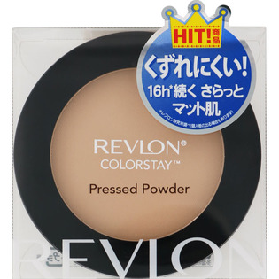
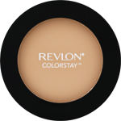

返回列表
产品名称：レブロン カラーステイ プレスト パウダー Ｎ 820 ライトオークル

レブロン レブロン カラーステイ プレスト パウダー Ｎ 820 ライトオークル ＿
メーカー レブロン
JANコード 4951445167246
商品の特徴
よりふんわり、やわらかな超微粒子パウダーに。
ウルトラファイン技術でシルクのようになめらかなテクスチャー
成分・分量
＜配合成分＞
タルク、ステアリン酸亜鉛、安息香酸アルキル（C12-15）、コーンスターチ、ポリエチレン、フェニルトリメチコン、ナイロン-12、カオリン、合成金雲母、フェノキシエタノール、エチルヘキシルグリセリン、メチコン、トリエトキシカプリリルシラン、レシチン、シリカ［＋／－］酸化チタン、酸化鉄
用法及び用量
-